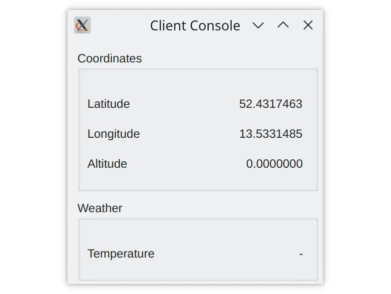
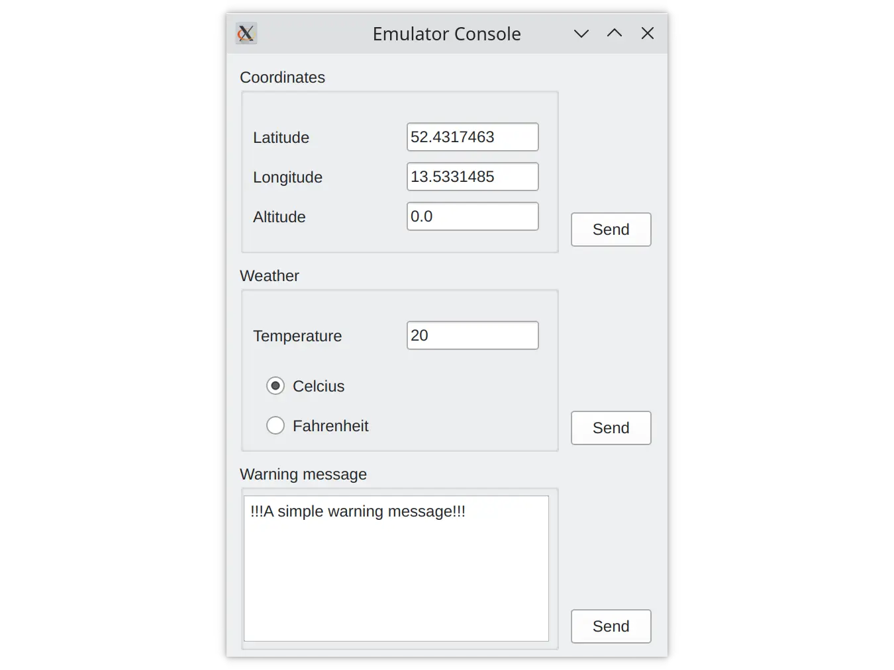

Sensors
The Sensors example shows how two applications can communicate by sending protobuf messages using UDP sockets.
The Sensors example consists of the following components:
protobuf_sensorslibrary that you generate from the protobuf schema using the qt_add_protobuf call.protobuf_sensor_emulatorapplication that emulates simple sensor behavior.protobuf_sensors_clientapplication that displays the sensor data from the UDP socket.
The client application binds on the localhost UDP port 65500 and waits for data from the emulator application.

Use the emulator application to change the values of sensor data and send the data to the client's UDP port.

The applications use the generated messages from the protobuf_sensors library to communicate. The library is generated from the protobuf schema described in .proto files.
qt_add_protobuf(protobuf_sensors
PROTO_FILES
sensors.proto
tlv.proto
)
The first file describes the Type-Length-Value message, that wraps the sensor data:
package qt.examples.sensors.tlv;
enum MessageType {
Coordinates = 0;
Temperature = 1;
WarningNotification = 2;
}
// Protobuf messages imply inline data size.
message TlvMessage {
MessageType type = 1;
bytes value = 2;
}
The second .proto file contains a description of the sensor messages:
package qt.examples.sensors;
message Coordinates {
double longitude = 1;
double latitude = 2;
double altitude = 3;
}
message Temperature {
enum Unit {
Farenheit = 0;
Celsius = 1;
}
sint32 value = 1;
Unit units = 2;
}
message WarningNotification {
string text = 1;
}
Messages are serialized using QProtobufSerializer that you instantiate in the client:
class SensorClient : public QObject { Q_OBJECT ... private: QUdpSocket m_client; QProtobufSerializer m_serializer; };
And the emulator:
class SensorEmulator : public QObject { Q_OBJECT ... QUdpSocket m_socket; QProtobufSerializer m_serializer; };
After you click the Send button in the emulator application, the data from QLineEdit fields is converted from string format to the message field-specific format, for example, double for the fields of the Coordinates message:
QObject::connect(ui->sendCoordinates, &QPushButton::clicked, this, [this]() {
qt::examples::sensors::Coordinates coord;
coord.setLatitude(ui->latitudeValue->text().toDouble());
coord.setLongitude(ui->longitudeValue->text().toDouble());
coord.setAltitude(ui->altitudeValue->text().toDouble());
emit coordinatesUpdated(coord);
});
Then the message with all the fields is serialized and wrapped with the Type-Length-Value message:
Q_ASSERT(serializer != nullptr);
qt::examples::sensors::tlv::TlvMessage msg;
msg.setType(type);
msg.setValue(data);
return msg.serialize(serializer);
The client applies the reverse operations on the received datagrams. First the Type-Length-Value message is deserialized from the datagram data:
const auto datagram = m_client.receiveDatagram();
qt::examples::sensors::tlv::TlvMessage msg;
msg.deserialize(&m_serializer, datagram.data());
if (m_serializer.deserializationError()
!= QAbstractProtobufSerializer::NoError) {
qWarning().nospace() << "Unable to deserialize datagram ("
<< m_serializer.deserializationError() << ")"
<< m_serializer.deserializationErrorString();
continue;
}
Then the Type-Length-Value message is deserialized into the sensor message:
qt::examples::sensors::Coordinates coord;
coord.deserialize(&m_serializer, msg.value());
emit coordinatesUpdated(coord);
break;
Finally, it is converted and displayed to the user:
ui->latitudeValue->setText(QString::number(coord.latitude(), 'f', 7));
ui->longitudeValue->setText(QString::number(coord.longitude(), 'f', 7));
ui->altitudeValue->setText(QString::number(coord.altitude(), 'f', 7));
Note: Before running the example, make sure that your operating system allows binding on UDP port 65500 and sending the data over UDP.